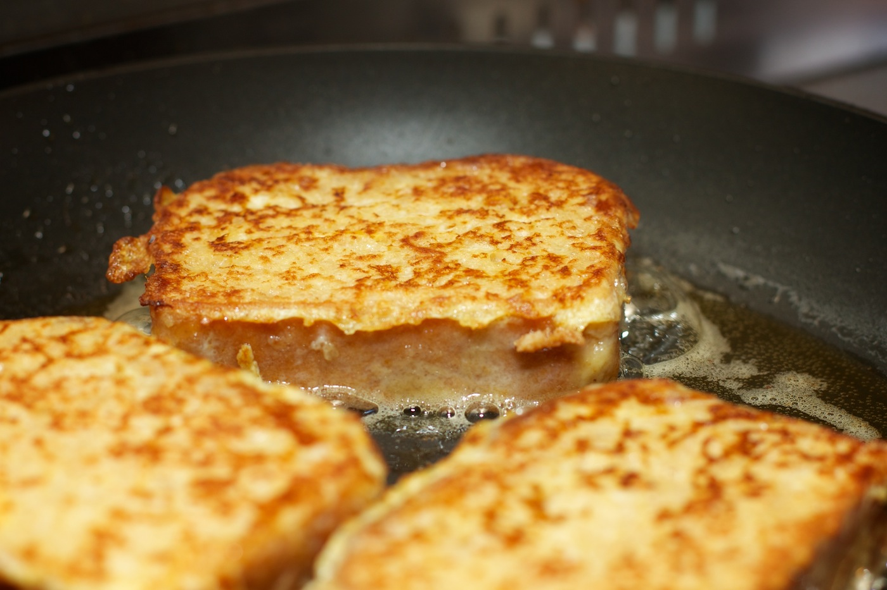

Het is voornamelijk een Europees gerecht, maar het wordt ook gegeten in Noord-Amerika. Wentelteefjes zijn vroeger ontstaan, toen gooiden mensen geen oud brood weg. Daarom werden er wentelteefjes van gemaakt zodat het weer eetbaar en lekker is. Tegenwoordig wordt het niet meer om die reden gemaakt, maar gewoon omdat mensen het lekker vinden.
